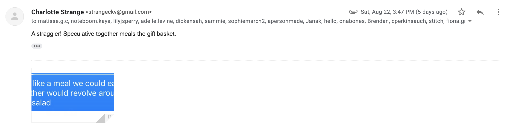
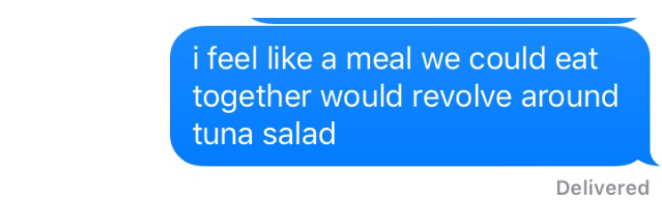
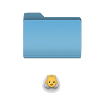
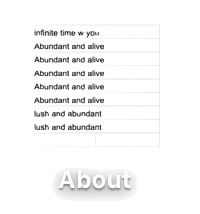

 




![Has it been too long?
The e-mail is still black-and-white and there is NO unsubscribe button. This being said, what is technological upgrade if not a recurrent, unfolding, and ambivalent promise? Keep expecting this introduction..
I'm dedicating this week to the tactile, bouncy, erratic, and slow. By which, I really mean circular? After all that, why not be thankful for the moon?
xoxo (as always)
Charlotte
The Weather: Today, the weather is a philosophical dilemma, thereby giving stature to their animalism, grandiloquently label their nothingness problem, which horrifies them, as a Philosophical Good, and thus gets credit for being deep....](Assets/aarchive3.png)
![Seeking a skillshare for ungrowth. Not ungrowth as in shrinkage but the un-growth that happens when you drink from the water can that sprinkles your toes and not the ground below them. A type of time-travel, really. The type of moving forward that actually unravels as it paces.
I have sweet potatoes, blueberries in yogurt, morning cereal mush in return. I imagine we share a meal revolving around tuna salad. It really is that simple and sweet!
xoxo,
The Weather: Today, the weather is a rebellion of over half the population, particularly when it's made up of people working on it. Even though off the money system, institute complete automation and destroy the male establishment because:...
Grab Bag 3.zip](Assets/archive4.png)